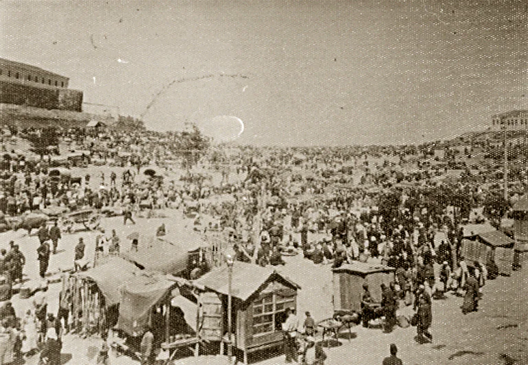
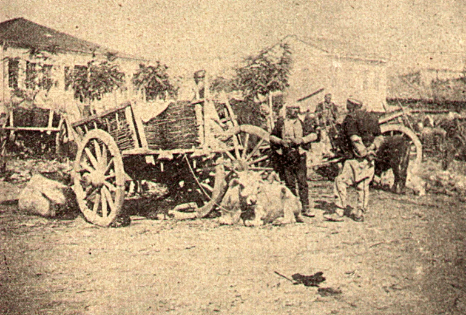
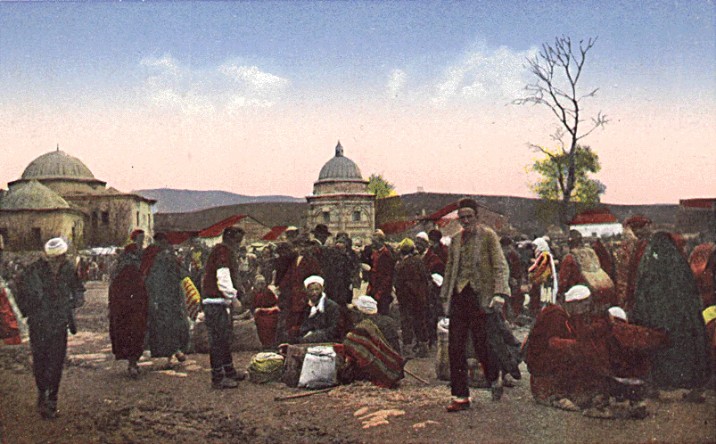

Скопие 1916 - 1917 панорама 1
Документи от Балканските войни
- Година
- 1916-1917
- Времетраене
- 00:11

Превозвачи на скопския пазар под крепостта, срещу турската поща. Отзад вдясно се виждат Мустафа паша джамия и пощата. (19 век)

Пазар в Скопие пред Хюкюмата (общината) и турската поща - 1902 година. На заден план вляво е казармата. (края на 19 век)

Пазарен ден в Скопие пред Хюкюмата (общината) и турската поща през 1902 година. Отзад е Мустафа паша джамия.

Скопският пазар под градската крепост - 19 век.

Скопският пазар под градската крепост - 19 век.

Превозвачи на градския площад - 19 век.

Пазар в Скопие пред Хюкюмата (общината) и турската поща - 1902 година. На заден план се вижда казармата.

Бит пазар, пазар за селскостопански продукти. На заден план са Исхак бей джамия и тюрбето. (края на 19, началото на 20 век)

Бит пазар, края на 19 век.

Пазар в старата чаршия - края на 19 век.

Бит пазар. На заден план са Исхак бей джамия и тюрбето.
- 19 век.

Бит пазар. На заден план са Исхак бей джамия и тюрбето.
- 19 век.

Част от Бит пазар - пазар за грънчарски изделия.
(началото на 20 век)

Граждани и селяни на Бит пазар - миг от пазарните дни (началото на 20 век)

Продавач на картофи - миг от пазарните дни
(около 1930 година)

Бит пазар - 1920-те.

Бит пазар - 1950-те.

Бит пазар - 1950-те.

Документи от Балканските войни
 Акведукт4 картички
Акведукт4 картички Кале30 картички
Кале30 картички Мостове60 картички
Мостове60 картички Кей58 картички
Кей58 картички Площад46 картички
Площад46 картички Сгради66 картички
Сгради66 картички Християнски храмове19 картички
Християнски храмове19 картички Мюсюлмански сгради33 картички
Мюсюлмански сгради33 картички Офицерски дом29 картички
Офицерски дом29 картички Театър28 картички
Театър28 картички Железопътна гара13 картички
Железопътна гара13 картички Училища36 картички
Училища36 картички Паркове12 картички
Паркове12 картички Пазари18 картички
Пазари18 картички Улици38 картички
Улици38 картички Панорама I60 картички
Панорама I60 картички Панорама II30 картички
Панорама II30 картички Колажи55 картички
Колажи55 картички Наводнения9 картички
Наводнения9 картички Земетресение27 картички
Земетресение27 картички Скопие 200026 картички
Скопие 200026 картички